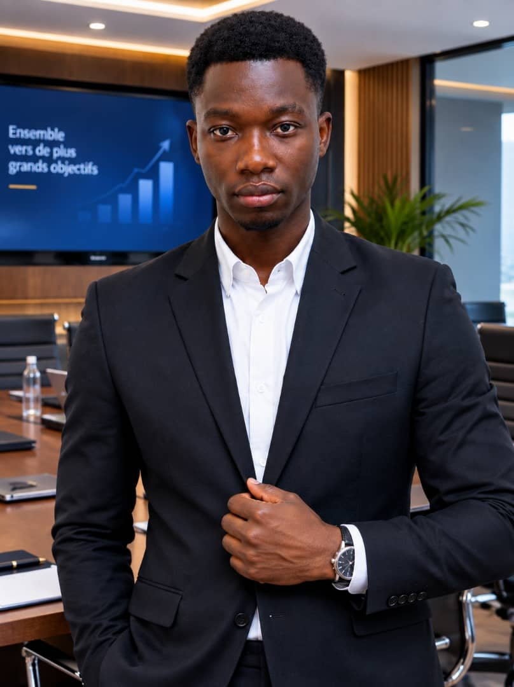

01
Développement informatique
Création de sites web, applications, plateformes et solutions métiers.
RECTOY-AIRES développe des solutions technologiques destinées aux entreprises, aux professionnels et aux populations afin de participer à la transformation numérique de l'Afrique et du monde.
Créer, connecter et développer des solutions technologiques capables de répondre aux défis d'aujourd'hui et de demain.
RECTOY-AIRES place la technologie, l'innovation et l'impact au cœur de sa démarche.
RECTOY-AIRES est une entreprise technologique orientée vers la création de solutions numériques, informatiques et innovantes.
Notre objectif est d'accompagner les entreprises, les professionnels et les populations dans leur transformation numérique.
Nous croyons que la technologie ne doit pas seulement être performante. Elle doit également être accessible, utile et capable d'améliorer concrètement la vie des personnes.
Imaginer de nouvelles solutions.
Créer une technologie utile.
Construire des solutions fiables.
Notre mission est de concevoir et développer des technologies capables de résoudre des problèmes réels.
Nous souhaitons contribuer à la croissance numérique des entreprises et participer à la construction d'un écosystème technologique africain fort.
Utiliser la technologie pour connecter, simplifier, sécuriser et créer de nouvelles opportunités.
Nos domaines d'intervention permettent à RECTOY-AIRES d'aborder les enjeux technologiques sous plusieurs dimensions.
Création de sites web, applications, plateformes et solutions métiers.
Transformation numérique et optimisation des processus des entreprises.
Protection des données, systèmes informatiques et infrastructures numériques.
Création de contenus audiovisuels, communication visuelle et production numérique.
Solutions de communication et stratégies numériques pour les organisations.
Recherche et développement de solutions technologiques adaptées aux besoins futurs.
Conception d'applications mobiles et services numériques accessibles.
Réflexion et conception de solutions électroniques et technologiques innovantes.
RECTOY-AIRES développe et accompagne des solutions numériques destinées aux entreprises, aux professionnels et aux utilisateurs.

Une solution technologique conçue pour accompagner les entreprises dans leur gestion, leur organisation et leur transformation numérique.
Découvrir le projet →
Une plateforme pensée pour faciliter l'accès aux services numériques, favoriser la digitalisation et créer de nouvelles possibilités de connexion entre les acteurs.
Découvrir le projet →
Une solution orientée vers le commerce numérique, permettant aux entreprises et aux commerçants de développer leurs activités dans l'univers digital.
Découvrir le projet →Découvrez RECTOY-AIRES, ses solutions et les reportages de RECTOY MAGAZINE en images.
Sept cofondateurs aux profils complémentaires, chacun responsable d'un pôle, réunis autour d'une ambition technologique commune.

Chef de l'entreprise et responsable de la vision globale, il coordonne les différents pôles, arbitre les décisions stratégiques et pilote les projets numériques et technologiques de RECTOY-AIRES.
Formé au marketing (niveau Master) et fort d'une expérience commerciale, il transforme les offres de RECTOY-AIRES en opportunités et développe le portefeuille de clients et de partenaires.

Spécialisée en communication visuelle et active dans l'audiovisuel, elle assure la cohérence de l'image publique de RECTOY-AIRES et transforme les messages de l'entreprise en contenus visuels professionnels.

Architecte inscrite à l'Ordre et doctorante en développement urbain durable, elle développe et supervise les activités qui demandent une compétence architecturale. PDG de MACERAT.S.

Titulaire d'un Master 2 d'anglais et très performant en design et infographie, il prend en charge la création graphique et une partie de l'expérience visuelle des produits et supports numériques.

Géographe de formation et expérimenté dans l'organisation de réunions et de grandes cérémonies, il coordonne les rencontres, les événements et les relations avec les partenaires et les institutions.

Spécialiste de la maintenance de grandes machines d'entreprises, il apporte à RECTOY-AIRES une compétence technique tournée vers les entreprises et les environnements industriels.
RECTOY-AIRES a vocation à réunir progressivement des profils complémentaires issus de l'informatique, de l'ingénierie, de l'audiovisuel, de la communication, du commerce et d'autres domaines technologiques.
Nous voulons participer à la création d'un écosystème technologique capable de produire des solutions compétitives à l'échelle internationale.
Développer des solutions adaptées aux réalités africaines.
Encourager la création et l'expérimentation de nouvelles technologies.
Construire des produits capables de dépasser les frontières.
Mettre la technologie au service des populations.
Vous avez une idée, un projet ou un besoin technologique ? Parlons-en.
rectoyaires@gmail.com
+225 0705801517
Côte d'Ivoire — Afrique
Retrouvez les annonces, événements, nouveautés et offres publiés par RECTOY-AIRES et son écosystème.
 Annonce
AnnonceDécouvrez les dernières informations concernant RECTOY-AIRES et ses solutions technologiques.
Lire la suite → Événement
ÉvénementRetrouvez les prochains événements, conférences et rencontres de notre écosystème.
Voir l'événement → Publicité
PublicitéDécouvrez les solutions et services proposés par RECTOY-AIRES et ses partenaires.
Découvrir →